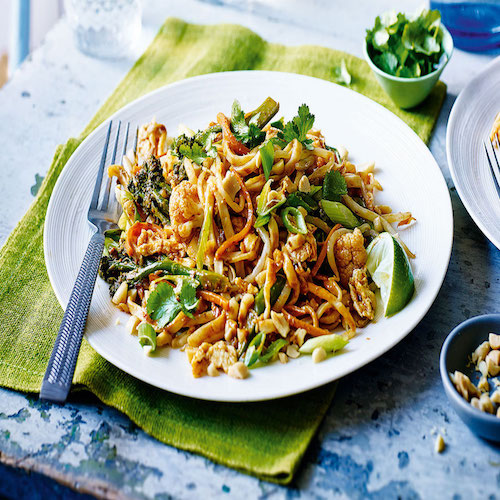
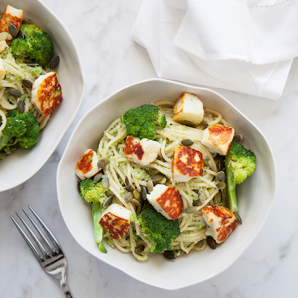
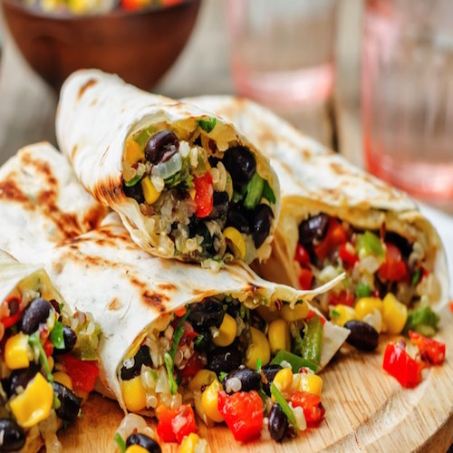

My favourite easy vegetarian recipes
|  |
Vegetarian pad thaiReally nice, well tasting, peanutty pad-thai. |
|  |
Broccoli pasta with halloumi and pestoThis is a midweek, quick treat! Really easy to make, rich in iron and tastes great! |
|  |
Black-bean vegan burritosGreat comfort food! The burritos are easy to mix together. Just takes sometime to bake. Serve with a nice guaccamole! |
About this page
This page has been coded during the FullStack program @LeWagon.